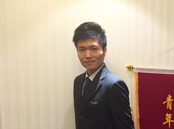
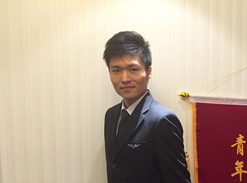

免费专线电话：400-613-1698
1.何谓空中走廊 ？空中走廊，是在两点连线的两侧各有4-5公里宽度的空中飞行通道... 【详情】
民航飞机的辅助动力装置
民航飞机的通信系统
内航空乘就业指导机构
东方航空培训教员、高级导师，2005年进入中国东方航空股份有限公司成为乘务 员，2008年升为乘务长，后接公司重任，内调东航新建分公司任职，委任客舱部 教员一职，短时间内组建起一支迎合东方航空企业文化的空乘队伍，由于表现出 色，2012年成为最年轻客舱经理一员。
400-828-0101


 
